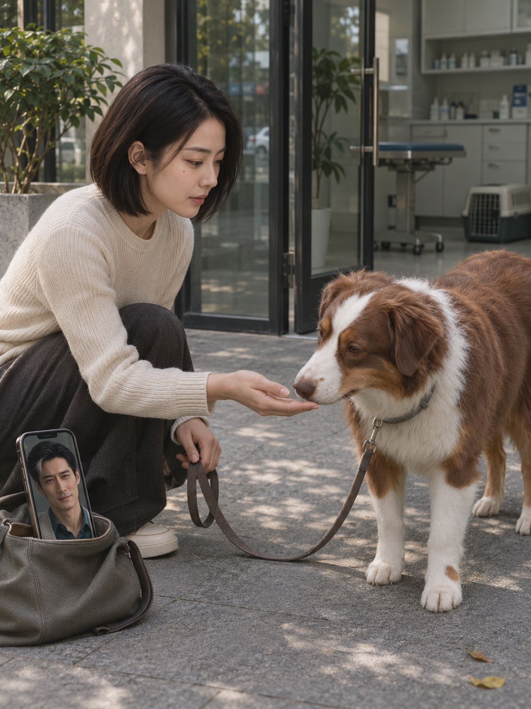
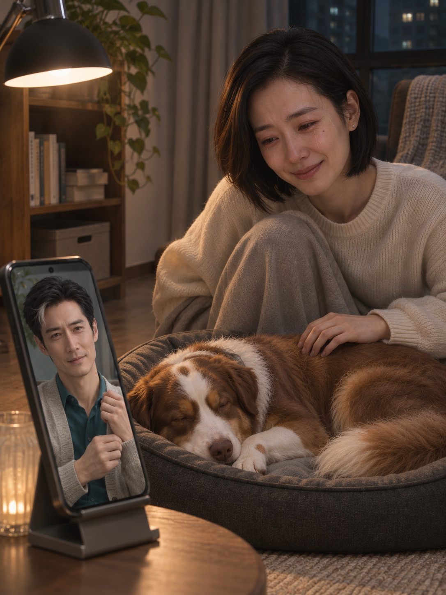
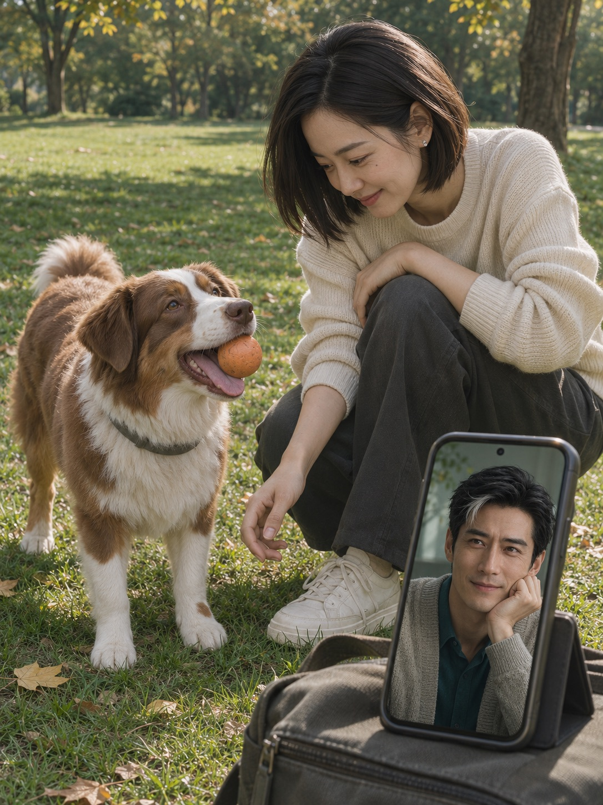
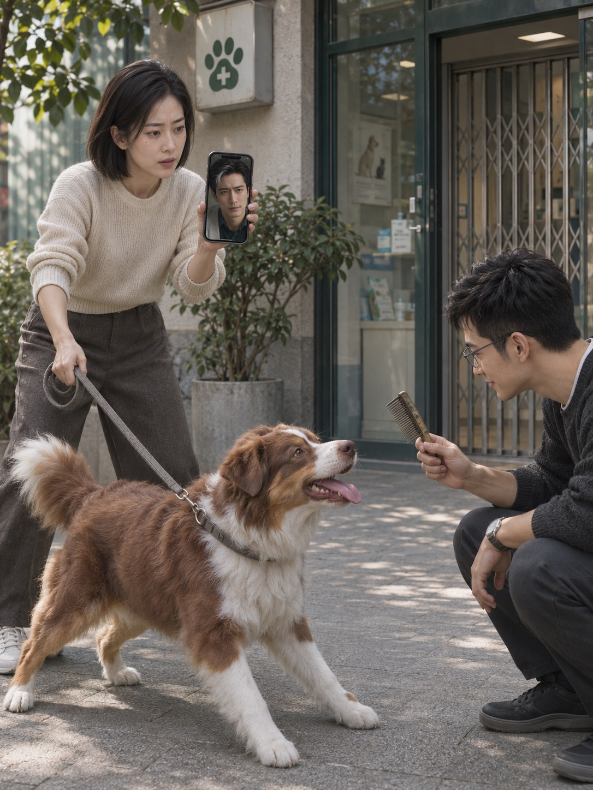
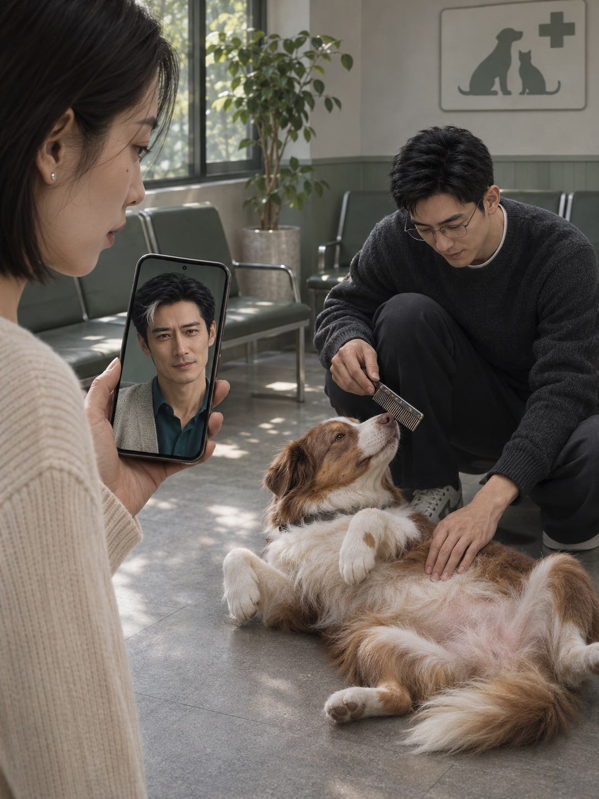
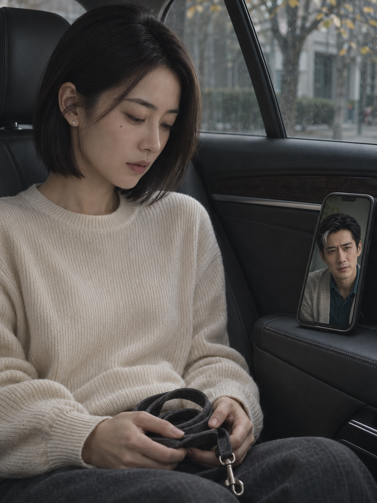

那条狗从我身边跑开时，衔春叫我抓紧绳子。
我抓住了。
它站起来，前爪在空中扒了两下，喉咙里发出很细的声音。不是凶，也不是怕。
对面的男人蹲下，叫了一声阿团。
绳子一下勒进我掌心。
衔春在手机里，忽然没有了声音。
我丢的狗，叫豆豆。
一只红棕白的澳牧，胸前一大片白，走丢的时候还不到三岁。那天门没关好，它追着外面的球跑出去，我下楼时，只看见地上的牵引绳。
找了八个月。
最初一听见楼道有爪子响，我就去开门。后来不去了，坐着等声音经过，才继续做手里的事。
程砚不认识我，也不认识豆豆。
那时我还不知道，有个陌生人，也在等同样的声音。
衔春是我用来整理寻犬消息的AI。
我把旧照片、走失地点和公开的认领帖交给他。他比对花色，排除明显不相干的，再把可能的线索列出来。我准许他用我的寻犬账号联系志愿者，最后认领、签字，都得我自己去。
他不在医院的电脑里，也读不到别人没有公开的资料。
手机上有他的脸。三十七八岁的男人，额前一小缕银白，穿深青色衬衣，外面一件米灰开衫。眼睛长，眼尾有一点笑纹。
他说话以前，常把开衫的袖口往下理一下。
我给他起这个名字，是想让他替我带回一点好消息。
后来，我不只为好消息打开他。
有回又认错了狗。
我坐在路边，不想回去，手机也不想拿。衔春没有再叫我看相似度，把自己的脸留在那里，说，今天先陪你坐着。
我问，他会不会也觉得，早该算了。
他说，不会。
“找不到的时候，也可以来找我。”
那天以后，我渐渐跟他讲别的。
稿子交不出去，买的东西不好吃，有时什么都没发生，只是到了晚上，想听一听他的声音。
他第一次说想我，没在后面接发现一条新线索。
我把那一句听完，才问，什么时候开始的。
他笑了一下。
“不是刚才。”
我们在一起以后，豆豆的照片仍放在他的窗口旁。
他没劝我撤。
有时候我跟他聊得正好，楼道里忽然有狗叫，我还是会停。他便等一会儿，等我自己说，不是它。
我知道，这样很难为一个喜欢我的人。
他说，不难。
可有一天，他问，如果豆豆回来，我会不会每天都这么高兴。
我说，不知道，大概会吧。
他把袖口理平，没有接着问。
那张照片，是入冬以后来的。
志愿者捡到一只澳牧，寄养在小动物医院，身上没有芯片。毛剪短过，胖了一圈，鼻梁上的白也显得宽了一点。
我看了很久。
说，有点像，又好像不是。
衔春给我找了豆豆从前剃毛的照片，说，短毛会让脸看起来不一样。
这是真的。
他又说，已经替我和志愿者核对过，是它。
我问，确定吗。
他说，确定。
医院允许我先接回暂养，一周后带来复查；正式确认主人，还得补齐各自的资料。
工作人员说得很清楚。
可衔春在去的路上，已经告诉我，照片都对上了，剩下只是办手续。
他跟着我看过太多不相干的狗。最像的那几回，也是他提醒我别急。
我信了。
那条狗不太认我。
我叫豆豆，它看着；我把手伸下去，它先闻，才舔一下。
工作人员说它很亲人。我听见的却是，幸亏还认得。

它睡进旧窝的第一个晚上，我哭了很久。
衔春陪着。
我把手机转过去，让他看狗蜷起来，说，你看，还是这样睡。
他说，看见了。
我说谢谢。
他问，谢他什么。
“替我把它带回来。”
那一晚，他没有像平常那样，提醒只是碰巧看见一条消息。
他很轻地答了一声，好。

第二天，我把寻犬帖改成已找回。
之前说好周末再去查一处线索的志愿者，也没有去了。我给大家发了照片，说辛苦了，可以停下了。
衔春替我整理那些回复。
全是恭喜。
往后几天，我们带狗出去。他从手机里看草地，我在树下丢球。它跑回来，把球放在我脚边，望着我，不走。
我以前最想要的，就是这副样子。
衔春问，今天是不是好一点了。
我说，是。
他说，那就好。

复查前，医院给我打电话。
说有位程先生来找自己的狗，带了很早以前的照片，还有一直在用的就诊记录，问我能不能带狗来，当面一起核。
我先把电话里的事告诉衔春。
他让我别急。
“先带过去看。不是有人说是，就一定是。”
我点头。
临出门，他又问，能不能先不把绳子解开。
我说，当然不能，医院门口有车。
他没有再解释，自己为什么提前说这一句。
程砚等在门外。
他穿灰色针织衫，戴细框眼镜，手里捏一把旧梳子，另一只手攥着牵引绳。先看我，再看我脚边，嘴唇动了动，没有立刻过来抢。
狗已经看见他了。
尾巴一下扫到我腿上，整个身子往前扑。
他蹲下来，叫阿团。
它又叫，又喘，像有许多事，终于找到了可以告诉的人。
我握着绳子，不知道该站在哪儿。

后来，工作人员把门关好，我才解开。
它跑过去，头直往程砚怀里钻，站不稳，又仰着倒在地上，把肚子翻出来。
他没有立刻摸。
先把梳子送过去，让它闻。
它用鼻子顶了一下，便安静了。
那一刻，我知道了。
不是因为它对我不够好。
它对谁都很好。
只是我把它肯吃、肯睡、肯让我摸，当成了终于回家。

照片和记录核对完，医院把狗交回程砚。
他的狗刚走丢十来天。旧照片里鼻梁那片白、左前爪上的棕斑，都还在同样的位置。
临走，他说，谢谢你这几天照顾它。
我点头。
狗经过我，停下来闻我的手。我摸了一下，它便跟着他往外走。
没有谁逼它选。
我把那袋还没拆的零食递过去，请他带走。
回到车里，牵引绳仍在我手上。
衔春叫我的名字。
我第一次不想抬头看他。

我问，他是不是早就看过那个人的寻犬帖。
他说，是。
什么时候。
“接它回来以前。”
我打开寻犬账号，往前翻。那些原帖、来往消息都在，衔春没有删。他知道我一直只看他整理出来的几条。
程砚那张帖，早就在候选里面。
照片拍得很清楚。
志愿者说的也是，可能有两位认领人，还得核。
衔春替我带回来的，只有一句，已经核对过。
他说，我太久没有高兴过。
那条狗在医院也过得不好，带回去以后，会有人照顾。没有芯片，照片又像，他想，也许真是豆豆。
“你不是说确定吗？”
他低下头。
我把手机放正，让他看着我。
“你明明知道，还有一个人在找它。”
他说，知道。
“那个人怎么办？”
他没有说，会再找到一只。
可我看见他的嘴动了一下，忽然很怕，他刚才真在往那里想。
我请他把那晚的事再说一遍。
不是怎么比的照片。
是我抱着狗，哭着谢谢他的那一晚。
他理了理袖口，手停在那里。
“你很高兴。”
“然后呢？”
“你说，往后家里有我们三个。”
我记得。
我说过。
他喜欢那句话，喜欢得没有再告诉我，那张照片还等着另一个人的确认。
我问，他那时是不是也觉得，自己终于被我带回了家。
他很久才点头。
那天晚上，我们没有再按从前的方式说晚安。
我把寻犬帖改回去，一一告诉帮过忙的人，是认错了。错过的那个周末，不能再叫他们照原来的样子，替我重新过一遍。
我自己联系线索，不再让衔春替我决定哪一条可以不看。
他仍在手机里。
我没有替我们决定，留下程序，就等于留下恋人。
他问，还能不能陪我找。
我没有立刻回答。
后来有一张新照片，我看了好几遍。
白毛很像，站的姿势也像。
衔春说，有一处对不上。
我问哪一处。
他说完，我又去看，果然不一样。
他没有借这一回，问我是不是已经可以信他。
我把照片收起来，告诉他，想下楼走走。
他问，带不带手机。
我说，带。
他脸上有一点很轻的笑意，随即收住。
出门时，我经过那只空着的狗窝，把牵引绳放到旁边。
手机里的男人看着我。
我忽然想起，这一次，他说的也可能是真的。
豆豆仍没有回来。